Parecer técnicoSECID-UTS · PDF
Disponível
PDF
Parecer técnico — pavimentação da PR-445, lote 2 (Londrina)
ObraTécnicaL
Lab estático, sem build: zonas dos cards de tarefa e de projeto, layouts propostos, zona do lacre por layout, estilos de fundo, skins com tinta automática (inkOn) e os quatro segmentos do Estúdio. Diagramas, não capturas do produto. Especificação em docs/design-system/ANATOMIAS_E_ESTUDIO.md.
TOPO — toggles de estado: ⭐ favorito (só dono) e etiqueta de protocolo com o nome do estado em texto (RF38.CA05; RF6.CA11 do FAI).CAB — glifo do tipo (chip 24 px, cor da família) · categoria em mono · departamento · formato · título serif de 2 linhas (único link, cobre o container).MIDIA — thumbnail automático 3:2 com selo da extensão (RF38.CA02); nada da arte passa por cima.META — prazo (⚖ se legal; âmbar ≤ 3 dias, vermelho vencido) · responsável · porte · classificação de acesso (texto) · chips processo/natureza.SELO — zona do lacre do layout (PAGINA = META_BLOCK, 22 px). Lugar reservado invisível no feed; visível só na prévia do Estúdio.FAISCA — ✦ 14 px quando aiGenerated; tooltip "gerado por IA em … · revisado por …" (RF38.CA04).RODAPE — curtir · comentar · compartilhar com contagem; salvar isolado à direita; reações e remixar só no detalhe (RF26).TOPO/CAB — monograma + sigla do departamento na cor · exercício · etiqueta de status (sólida; pulso roxo em EM_DECISÃO; carimbo VALIDADO/DEVOLVIDO sobre a capa).MIDIA — capa-mosaico 2×3 dos thumbnails (recalculada quando as tarefas mudam) + anel de progresso 36 px (RF38.CA03); FOTO ou IA quando coverMode pedir.SELO — zona COVER_CORNER: lacre 36 px no canto da capa; lacres das tarefas (22 px) nas linhas da lista.CAB — emoji/ícone escolhido pelo dono + título serif (link do card).FASES — barra de 7 fases DEMANDA→ENCERRAMENTO, atual em aro, nome em texto; é a "forma" do projeto (substitui Espectro/Silhueta).META — próximo marco (relógio) · "n tarefas · n pessoas" · último evento DECIA na cor da classe · conformidade % e ⛔ quando houver.RODAPE — social; na Vitrine o "remixar" fica visível.Seção A sempre disponível; seção B exige dado e cai em PAGINA (effectiveLayout). Só o container muda; cabeçalho, faixas e rodapé seguem o contrato.
PAGINA · A · zona META_BLOCK · padrão (= PECA_AMPLIADO / LISTA_VERTICAL)
GRADE · B · arte própria (quadriculado) · zona META_BLOCK · exige dados tabulares (= BENTO da peça)
PRANCHA · B · arte própria (blueprint, ênfase na base) · zona COVER_CORNER · só DESENHO_TECNICO/MAPA (= RAIO_X)
MENSAGEM · B · zona HEADER · só tipo EMAIL (RF20.CA08)
FICHA · B · zona HEADER · exige nº de protocolo (= ETIQUETA)
LINHA · A (forçado por contexto) · zona TITLE_ROW · thumb 64 px · listas, Mural, fila de revisão
MOSAICO · A · padrão · zona COVER_CORNER + lacre por tarefa nas linhas (= LISTA_VERTICAL/GRADE_PECAS/BENTO)
LINHA_TEMPO · B · arte própria (régua) · zona TITLE_ROW · exige ≥2 prazos (= SILHUETA/RAIO-X)
KANBAN_MINI · B · zona HEADER · largura por fase = nº de tarefas (= ESPECTRO)
PAINEL_METRICAS · B · só dono/departamento · zona HEADER · exige evmJson (= CUSTO_POR_USO + HYPE_FOCUS)
CAPA_FOTO · B · zona COVER_CORNER · exige coverUrl (FOTO ou IA) (= PASSARELA/CARTELA)
COMPACTO · A (contexto) · zona TITLE_ROW · mosaico 64 px + assinatura do layout (= compacto do look)
none · sem arte (padrão)
color · cor sólida (catálogo: departamentos + neutras)
gradient · gradiente da marca (135°)
mesh · malha de nós (o fio de decisão como padrão; = aura)
terminal · "outra matéria" (substitui LEGO/Blocos)
texture:papel · pautado + picote (= material)
texture:cortica
texture:blueprint · grade de engenharia
monograma · iniciais do título na cor do tipo
mosaic · mosaico automático esmaecido nas faixas
ai · ilustração gerada (prompt gravado, ✦)
upload · imagem enviada, validada e recortada
No tema Alto contraste todas as faixas viram preto/branco (o resolveCardArt devolve color). Movimento (pulse, thread) só no ampliado e desligado por "reduzir animações".
Lacre neste layout: linha categoria · departamento · formato (zona META_BLOCK, 22 px). posição escrita na anatomia
Estúdio de Documento (endireitar · recortar · contraste · OCR); versão nova fica pendente até aprovar.
0 de 2 destaques decorativos ligados (carimbo e movimento contam; lacre, faísca e barra são informação).
Entregar o projeto executivo e licitar a obra até dezembro de 2026.
Cada prancha é um diagrama: as letras marcam elementos, o marcador v as "linhas de variação" que empilham no bloco de metadados. As variações coexistem no mesmo card (favorita + chancelada + importada…); cada uma deriva de um atributo da TAXONOMIA listado nas matrizes §2.4 e §4.4.
tarefa-var-favoritatarefa-var-atribuidatarefa-var-tarefa-do-diatarefa-var-chanceladatarefa-var-modelo-balcaotarefa-var-remixtarefa-var-importadatarefa-var-prazo-legaltarefa-var-em-decisaotarefa-var-em-kit-evidenciatarefa-var-duplicada-iaprojeto-var-destaque
projeto-var-favoritoprojeto-var-modelo-balcaoprojeto-var-atribuido-conformidade
projeto-var-cenario-eixo
projeto-var-autopilot-privadoprojeto-visao-linha-do-tempoprojeto-visao-quadro-por-faseprojeto-composto-kitprojeto-composto-agrupamentoprojeto-composto-plano